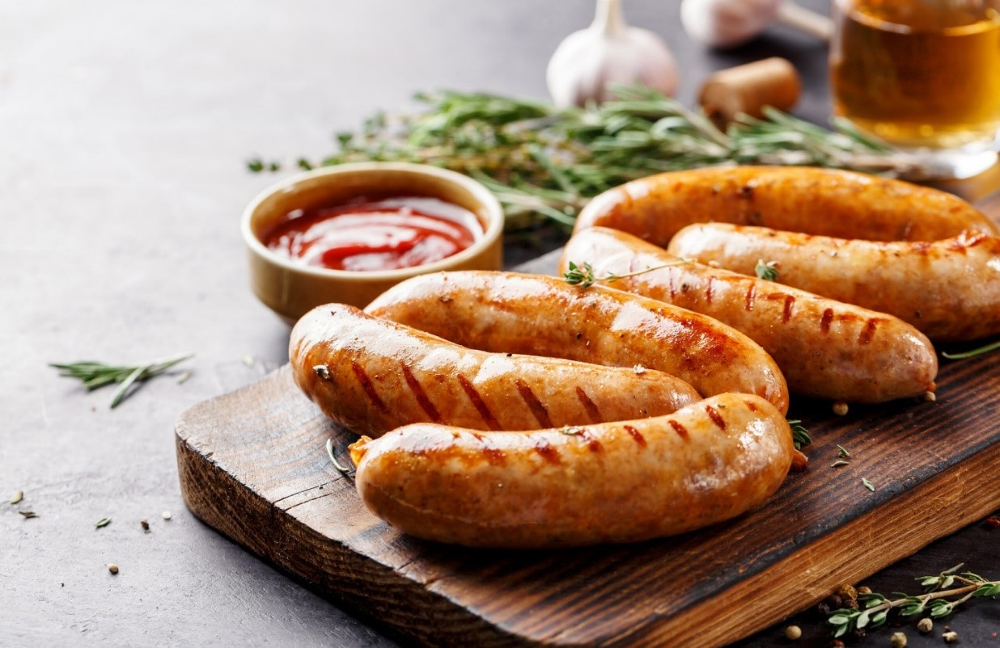

Lesson 15
UNIT 3
Livestock production
technology
BASIC PROCESSING TECHNOLOGIES
OF ANIMAL PRODUCTS

Meat and meat products production
Learn the active vocabulary of the Lesson and be ready to use it
in your further work:
Bacon
– бекон;
beef
– яловичина;
canning
– консервування;
chicken
– курча;
cold
storage – холодне
зберігання;
drying
– сушка;
fermentation
– бродіння,
ферментація;
foie
gras – гусяча
печінка,
фуагра;
freezing
– заморожування;
gourmet
foods – делікатеси;
intensive
animal farming – інтенсивне
тваринництво;
lamb
– м’ясо молодого баранчика,
ягнятина;
lard
– сало;
meat
industry
– м’ясна промисловість;
mince
– фарш;
packaging
– упаковка;
pork
– свинина;
preservation
– зберігання;
processing
– обробка;
tissues
– захисні тканини;
sausage
– ковбасні вироби;
slaughtering
– забій худоби;
smoking
– копчення;
spoilage
– псування;
storage
– зберігання;
to
handle
– займатися,
контролювати, регулювати;
to
maintain meat quality – підтримувати
якість
м’яса;
vacuum
packaging – вакуумна упаковка.
Read
and translate the texts:
MEAT
INDUSTRY
The
term "meat industry" describes modern industrialized livestock agriculture
for
production, packing, preservation and marketing of meat (in contrast to dairy
products, wool, etc.). In economics, it is a fusion of primary (agriculture) and
secondary (industry) activity and hard to characterize strictly in terms of
either one alone. The greater part of the entire meat industry is termed meat
packing industry - the segment that handles the slaughtering, processing,
packaging, and distribution of animals such as cattle, pigs, sheep and other
livestock.
A
great portion of the ever-growing meat branch in the food industry involves
intensive animal farming in which livestock are kept almost entirely indoors or
in restricted outdoor settings like pens.
Many
aspects of the raising of animals for meat have become industrialized, even many
practices more associated with smaller family farms, e.g. gourmet foods such as
foie gras.
The
production of livestock is a heavily vertically integrated industry where the
majority of supply chain stages are integrated and owned by one
company.
The
meat industry can be divided into three different production systems,
industrial, mixed, and grazing systems.
In the first system, animals are separated from the land and their natural feed
supply, i.e. grassland and therefore, the animals in this production system is
dependent on other supplies of feed, i.e. grain and cereals which have to be
imported. It also has a larger environmental impact as the demand for external
feed requires vast resources, and a larger impact on food security as the
animals require crops that are edible to humans. The second system integrates
crop production and livestock agriculture on the same farm and therefore needs
no external input in terms of animal feed. It has a smaller impact on the
environment and food security as it does not diminish biodiversity at the same
scale as the former system, and it requires no importation of animal feed. The third system integrates the animal with its natural
environment, allowing the animals to graze, with over 90% of the feed coming
from non-agricultural sources. It has a smaller environmental impact as it
requires a low quantity of agricultural crops for feed and a lower impact on
food security as it does not require food edible for
humans.
The
global meat industry faces many challenges, from safety and authenticity
scandals to animal and human health issues, animal handling and slaughter, and
environmental impacts. Yet consumption continues to rise, especially in emerging
and developing countries. More issues are emerging, such as higher production
costs and competition from other proteins, while consumer concerns about food
safety and animal welfare, as well as environmental impact, are becoming more
prominent. The use of advanced technologies can lower costs and reduce waste,
meat products can be prepared to meet consumer needs and attitudes, and nowadays
meat can be produced in the laboratory. Alternative sources of protein such as
plants, mushrooms, algae, or insects can be incorporated into meat products to
make them healthier. Many animal husbandry techniques are available to reduce
environmental impact, although ethical issues remain. The overall challenge for
the meat industry is to meet consumer expectations and projected increases in
meat consumption while supporting sustainable goals.
GRAMMAR
EXERCISES
I.
Answer the following questions:
1)
What
is meat
industry?
2)
What
does meat packing industry handle?
3)
What
does intensive animal farming mean?
4)
What
dominates in meat industry: large industrialized enterprises or smaller family
farms?
5)
What
production systems can the meat industry be divided into?
6)
What does industrial system
integrate?
7)
What does mixed system integrate?
8)
What does grazing system integrate?
9)
What challenges do the global meat industry face?
10)
What alternative
sources of protein do
you know to
make meat
products
healthier?
11)
What is the overall challenge for meat industry?
II.
Find
in the text, the sentence which explains the term "fusion" and translate
it:
III.
Find in the list of words:
a)
methods
of meat processing;
b)
types
of meat.
IV.
Make up phrases:
|
Cattle-breeding
Sheep-raising Poultry-farming
Hog
production |
provides
population with |
pork
mince
beef
chicken
meat lard
bacon
mutton
goose
meat duck
meat |
V.
Complete the sentences using the words:
Ham,
sausage, veal, stored, preservatives, shelf-stable, bacon,
canned.
1)
The
flesh of young cattle is called_______.
2)
Due
to the heat processing a
________product
is produced.
3)
_______,
______ and
______ belong
to the group of cured meats.
4)
To prolong the shelf life of the products
manufacturers add_______.
5)
______meat can be______for several
years.
VI.
Choose the correct explanation for the terms:
1
- smoking;
2
- cold storage;
3
- fermentation;
4
- freezing;
5
- canning;
6
- drying;
7
- vacuum packaging.
|
a)
a
place that is kept very cold, where you put food to keep it
fresh; b)
a
method of meat preservation which preserves it from the time it is
prepared to the time it is eaten. It slows down decomposition by turning
residual moisture into ice, inhibiting the growth of most bacterial
species; c)
wrapping
food using a process in which all the air is
removed; d)
a
method of preservation in which food is placed to a metal container
without air; e)
removing
the water from food; f)
this
process typically involves the introduction of bacteria or yeast that
convert certain meat nutrients into mixtures of carbon dioxide and
alcohol. This process can both increase the flavor intensity and prevent
the end product from spoiling for relatively long periods of
time; g)
preserving and giving flavor to fish or other food by hanging it in
smoke. |
VII.
Comment the diagram Leading Beef Exports. Use the
phrases:
1)
Regardless of the animal, lean muscle usually consists of the same
components.
2)
According to the diagram we can say that lean meat consists of
...
3)...
holds the leading position. It accounts for ... ( covers
...)
4)
The next is .... holds the leading position. It accounts for ... ( covers
...)
5)
Its share is ...
6)
And the last position is occupied by ...
7)
Comparing all these data we can come to the conclusion that
...
8)
In conclusion it should be said that these figures vary. Generally, as fat
increases, the percentage of protein and water decreases.
Leading
Beef Exports
VIII.
Find
key sentences for retelling the text:
Sausage
making
The
origins of meat preservation are lost to the ages but probably began when humans
began to realize the preservative value of salt.
Sausage
making originally developed as a means to preserve and transport meat. Primitive
societies learned that dried berries and spices could be added to dried meat. By
600-500 BC there is mention of sausages from China, Rome and Greece. The
procedure of stuffing meat into casings remains basically the same today, but
sausage recipes have been greatly refined and sausage making has become a highly
respected culinary art.
Sausages
come in two main types: fresh and cured. Cured sausages may be either cooked or
dried. Most cured sausages are smoked, but this is not mandatory. The curing
process itself changes the meat and imparts its own flavors. An example is the
difference in taste between a pork roast and a ham.
All
smoked sausages are cured. The reason is the threat of botulism.
The
bacterium responsible, Clostridium botulinum, is ubiquitous in the environment,
grows in the anaerobic conditions created in the interior of the sausage, and
thrives in the 4 °C (39 °F) to 60 °C (140 °F) temperature range common in the
smoke house and subsequent ambient storage. Thus, for safety reasons, sausages
are cured before smoking.
IX.
In pairs, complete the dialogue on the basis of the
text:
-
What do you know about meat preservation?
-
Well...
-
I wonder, where and when the first mention about
...appear?
-
Let me think, ...
-
I'm sure ... culinary art.
-
It goes without saying. Do you know two main types of
sausages?
-
.. What is the reason for ...?
-
Well, the reason is threat of ...
-
I see.
X.
Read
and translate the text:
What
Machines Are Needed to Make Sausages
Making
sausages requires a few essential pieces of equipment to ensure the process is
efficient and safe. While the specific equipment used can vary based on the
scale of production and personal preferences, the following are commonly used
tools and machinery in sausage making.
Meat
Grinder:
A meat grinder is a vital piece of equipment used to grind the meat into a fine
or coarse texture, depending on the desired consistency of the sausages. It
typically consists of a hopper, a feed screw, and a blade or plate system to
grind the meat.
Sausage
Stuffer:
A sausage stuffer is used to fill the ground meat mixture into casings. It
typically consists of a cylinder, a piston, and various-sized nozzles to
accommodate different casing diameters. Sausage stuffers can be manual,
electric, or hydraulic, depending on the production scale.
Casings:
Casings are the outer shells that encase the sausage mixture. Traditionally,
natural casings made from animal intestines, such as hog or sheep casings, are
used. However, synthetic casings made from collagen or cellulose are also
popular options. Casings provide structure to the sausages and help retain
moisture during cooking.
Mixing
Bowls:
Mixing bowls are used to combine ground meat with various seasonings and
additives. It is essential to use bowls made of food-grade materials that are
easy to clean and sanitize.
Seasoning
and Spices: Sausages
require various seasonings and spices to enhance their flavor. These can include
salt, pepper, garlic, paprika, herbs, and other ingredients depending on the
desired taste profile.
Knives
and Cutting Boards: Sharp
knives are necessary for trimming and cutting the meat into manageable pieces
before grinding. Cutting boards provide a clean and sturdy surface to work on
and prevent cross-contamination.
Thermometer:
A
reliable food thermometer is essential for monitoring the internal temperature
of the sausage mixture during cooking. It ensures that the sausages reach the
appropriate temperature to ensure food safety.
Scales
and Measuring Tools:
Precise measurements are crucial for consistent flavor and texture. Scales and
measuring spoons ensure accurate amounts of ingredients are added to the sausage
mixture.
Smoker
or Oven:
Depending on the type of sausages being made, a smoker or oven may be required
for cooking or smoking the sausages. Smokers are commonly used for traditional
smoked sausages, while ovens can be used for baking or roasting
sausages.
Cling
Film or Parchment Paper: These
materials are used for wrapping and storing sausages before and after cooking.
They help maintain freshness and prevent drying out.
Hand
Tools:
Various hand tools such as mixing spoons, funnels, brushes for applying oil or
marinades, and tongs are helpful for handling the sausage mixture and
casings.
Refrigeration
and Freezing Equipment: Adequate
refrigeration and freezing equipment are necessary to store raw and cooked
sausages. This ensures food safety and extends their shelf
life.
It's
important to note that the equipment mentioned above may vary based on personal
preferences, regional traditions, and the scale of sausage production.
Commercial sausage production may require additional machinery, such as vacuum
stuffers, automatic linkers, and packaging equipment.
When
engaging in sausage making, it is crucial to prioritize hygiene and cleanliness.
Regular cleaning and proper maintenance of the equipment are essential to
prevent cross-contamination and ensure food safety. Following relevant food
safety guidelines and regulations is crucial to produce high-quality sausages
fit for consumption.
XI.
Comment the picture:
XII.
Using extra material make a report. The topic: “Useful advices for
tasty
sausage
making”